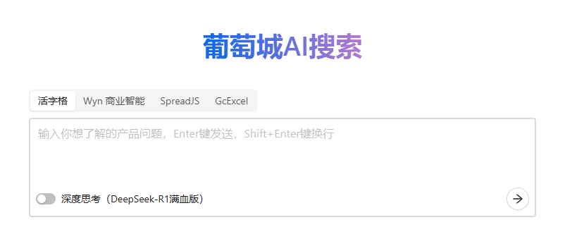
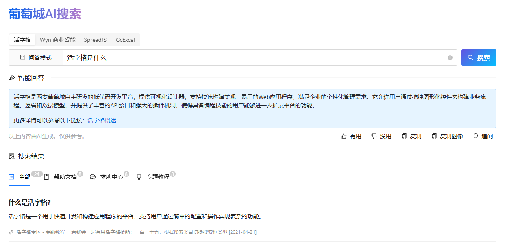

GC-QA-RAG
🌟 核心价值
- QA 预生成技术
采用创新的问答对生成方法，相比传统文本切片技术，能够更精准的构建知识库，显著提升检索与问答效果。 - 企业级场景验证
已在真实业务场景中落地应用，实现从传统搜索到智能搜索的无缝升级，用户接受度与满意度明显提升。 - 开源实践支持
提供完整技术教程，并开放源代码，助力开发者快速搭建易于落地的高质量企业级 AI 知识库系统。
概述
GC-QA-RAG 是一款面向葡萄城产品生态（包括 活字格、WYN、SpreadJS 和 GCExcel 等）的检索增强生成（RAG）系统。该系统通过智能文档处理、高效知识检索、精准问答等功能，有效提升了知识管理效率和用户支持体验。
本系统创新性地采用了 QA 预生成技术，克服了传统文本切片方法在知识库构建中的若干局限性。经过实践验证，该技术方案能够显著提升检索效果，可为 RAG 领域的技术实践提供新的思路。
葡萄城秉持“赋能开发者”的理念，现将 GC-QA-RAG 项目完整开源：
- 对于初学者，我们提供了详细的入门指南，帮助您快速掌握 QA-RAG 系统的构建方法
- 对于面临传统架构挑战的开发者，我们的架构设计文档可为您提供参考，助力现有知识库的优化升级
本项目也分享了葡萄城在 RAG 知识库产品设计方面的实践经验，希望能为相关领域的产品和技术探索提供有益参考。

项目背景
作为企业级解决方案提供商，葡萄城积累了大量的产品用户。在日常使用中，用户需要快速获取准确的产品信息，但现有帮助文档和技术社区存在以下挑战：
- 内容分散在多个平台（约 4000 篇文档、2000 个教程帖和 50000 个主题帖）
- 传统关键词搜索效果有限，难以满足精准查询需求
基于 AI 大模型技术，我们开发了 GC-QA-RAG 系统，旨在：
- 提供更智能、高效的产品问题解答服务
- 优化技术支持流程，提升服务效率
查看项目背景了解更多。
产品设计
GC-QA-RAG 采用"传统搜索界面+智能问答"的混合设计模式，旨在结合搜索引擎的高效性与 AI 的智能化能力。经过对对话式 AI 助手的深入评估，我们发现传统搜索界面更符合用户对信息获取效率的核心需求，同时通过智能回答区域提供 AI 增强的交互体验。

查看产品设计了解更多。
核心功能
- 双页面结构：简洁的 Home 页聚焦搜索入口，Search 页呈现智能回答与分类搜索结果
- 智能问答系统：支持打字机效果的逐字输出，提供追问功能实现有限的多轮对话
- 优化搜索结果：
- 四类选项卡分类展示（全部/帮助文档/求助中心/专题教程）
- 预生成详细答案支持"展开更多"查看
- 无分页设计提升浏览效率
- 交互增强：
- 回答质量反馈（有用/没用）
- 一键复制文本/图像
- 实时显示各类结果数量
用户体验
产品通过清晰的界面层级和智能化的交互设计，在保持搜索效率的同时提供 AI 增强功能。默认的单次搜索模式确保响应速度，追问功能满足深度探索需求，而可视化的上下文管理帮助用户保持操作认知。这种平衡设计使用户既能快速获取核心信息，又可按需展开更深入的智能交互。
技术架构
GC-QA-RAG 采用三层架构设计，确保系统清晰高效且可扩展：
构建层 - ETL
- 文档解析：支持多种类型文档（产品说明文档，论坛帖子等）
- QA 生成：基于文档内容自动生成问答对
- 向量化：将文本转换为高维向量，支持语义检索
- 索引构建：建立高效的检索索引与有效负载
检索层 - Retrieval
- 问题改写：优化用户查询，提高检索准确率
- 混合检索：结合关键词和语义检索
- RRF 排序：基于相关性排序算法优化结果
- 结果融合：整合多源检索结果
生成层 - Generation
- 问答模式：对接文本大模型，直接回答用户问题
- 思考模式：对接推理大模型，先思考再回答
- 多轮对话：支持上下文相关的连续对话
- 答案优化：确保回答的准确性和可读性
查看技术架构了解更多。
技术挑战
在构建企业级 RAG 知识库系统的实践中，我们面临着知识表征方面的基础性挑战。这些挑战主要源于知识本身固有的时空特性，这在当前 AI 技术发展阶段呈现出显著的解决难度。
空间语义歧义问题
问题描述：
产品不同模块中存在功能命名冲突现象。以活字格低代码平台为例，其文档中会出现以下情况：
- 页面模块的"数据透视表"功能
- 报表模块的"数据透视表"功能
- 表格报表模块的"数据透视表"功能
- Excel 的"数据透视表"功能（大模型内部知识）
影响：
这种命名冲突不仅给技术支持人员带来困扰，对 AI 系统的语义理解也构成了显著挑战。
时序版本管理问题
问题描述：
同一功能在不同版本中存在特性差异，典型表现为：
- 知识库中收录了某个功能的多个版本文档
- 用户可能仍在使用旧版本，仅需了解特定版本的功能特性
影响：
这种版本差异使得准确匹配用户实际环境中的功能特性变得复杂，增加了知识检索的难度。
落地效果
GC-QA-RAG 系统在实际业务场景中取得了令人鼓舞的应用成效，主要体现在以下几个方面：
-
用户接受度与粘性
系统上线后，用户访问量呈现稳步增长并逐渐趋于稳定，表明产品已经形成了稳定的用户群体和使用习惯。用户留存数据反映出较高的使用粘性，许多用户已将系统作为日常求疑解答的工具。 -
持续的产品优化
我们建立了完善的用户反馈机制，定期收集来自终端用户和技术支持团队的使用体验和改进建议。这些宝贵的实践反馈为系统迭代提供了明确方向，推动产品功能持续完善。 -
用户群体认可度
系统获得了用户群体的高度评价，其背后的技术创新思路也引起了专业开发者用户的广泛关注。技术原理和实现方案成为客户咨询探讨的热点，多个客户与团队表示希望借鉴相关经验。 -
业务价值体现
从实际使用效果来看，系统显著提升了技术支持效率和用户自助服务能力。知识获取革新带来可感知的流程优化，用户正向评价充分印证其成效。
这些成果不仅验证了产品和技术路线的可行性，也为后续发展奠定了坚实的基础。同时，我们相信 QA 预生成方案对文档型知识库具有普遍的参考价值。我们将继续秉持开放的态度，与用户社区和专业开发者携手合作，共同推动技术的不断进步。
查看落地效果了解更多。
License
MIT